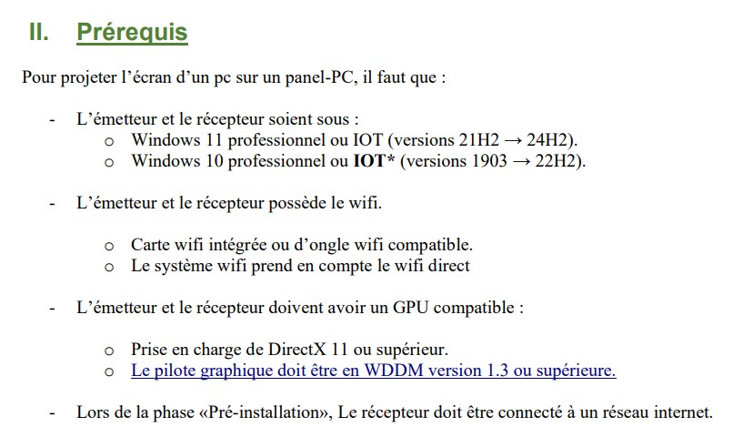
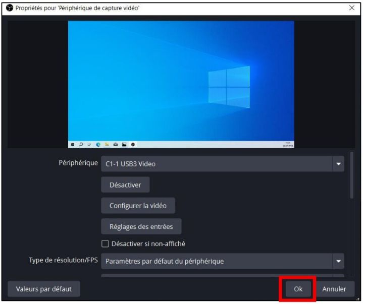

Produire une procédure d’installation et de mise en service d’un système
Lors de mon alternance chez IPO Technologie, j’ai rédigé deux guides permettant
d’utiliser un panel-PC grand format comme écran de projection, malgré l’absence
d’entrée HDMI sur ce type d’équipement.
Contexte de la demande
Un client souhaitait utiliser un panel-PC grand format comme écran de présentation.
L’objectif était de pouvoir brancher un ordinateur portable afin d’afficher son contenu
sur le panel-PC, comme on le ferait avec un écran secondaire classique.
Cependant, un panel-PC n’est pas un simple moniteur. Il s’agit d’un ordinateur complet,
qui possède généralement des sorties vidéo, comme une sortie HDMI, mais pas d’entrée HDMI.
Il n’était donc pas possible de connecter directement un ordinateur portable dessus.
Objectif :
trouver une solution simple permettant au client d’afficher l’écran d’un ordinateur
portable sur un panel-PC, puis produire une procédure claire pour son utilisation.
Documents associés
Deux guides ont été réalisés : un guide pour la solution logicielle Miracast et un guide
pour la solution matérielle avec boîtier de capture vidéo.
La difficulté principale venait du fait que le panel-PC ne pouvait pas recevoir directement
un signal HDMI provenant d’un autre ordinateur. Il fallait donc trouver un autre moyen
de récupérer ou d’afficher l’image du PC portable.
Contrainte technique :
absence d’entrée HDMI sur le panel-PC, ce qui empêche une utilisation directe comme écran.
Solutions étudiées
Miracast : solution logicielle de projection sans fil intégrée à Windows,
dépendante de plusieurs prérequis matériels et logiciels.
Boîtier de capture HDMI vers USB : solution matérielle permettant de récupérer
le flux vidéo du PC portable sur le panel-PC via USB.
Solution Miracast
J’ai d’abord étudié une solution logicielle basée sur Miracast. Cette technologie permet de
projeter l’écran d’un ordinateur vers un autre appareil compatible, sans câble vidéo.
Cette solution présente l’avantage de ne pas nécessiter de matériel supplémentaire. En revanche,
son fonctionnement dépend de plusieurs prérequis, notamment la version de Windows, la présence
du Wi-Fi, la compatibilité Wi-Fi Direct, le pilote graphique et la prise en charge de Miracast
par le matériel.
Le guide Miracast présente les prérequis, la pré-installation, l’utilisation, la déconnexion
et les tests de compatibilité à effectuer.
Solution boîtier de capture
Afin de proposer une alternative lorsque Miracast n’est pas compatible, j’ai également étudié
une solution matérielle utilisant un boîtier de capture vidéo HDMI vers USB.
Le PC portable est connecté au boîtier par HDMI, puis le boîtier est connecté au panel-PC en USB.
Le panel-PC récupère alors le flux vidéo comme une source de capture, affichée avec un logiciel.
J’ai d’abord réalisé des essais avec VLC, mais l’image n’était pas assez fluide.
J’ai donc retenu OBS Studio, qui offrait un affichage plus adapté.
Travail réalisé
Après avoir testé les deux solutions, j’ai rédigé deux guides d’utilisation complets :
un guide pour la projection via Miracast et un guide pour la projection via boîtier de capture vidéo.
Ces documents ont été pensés pour être utilisables directement par le client ou par un utilisateur
non spécialiste.
J’ai détaillé chaque étape de manière progressive, avec des captures d’écran pour Windows 10
et Windows 11 lorsque cela était nécessaire. Les zones importantes sont entourées sur les captures,
puis expliquées à l’écrit afin de limiter les risques d’erreur pendant l’installation ou l’utilisation.
Les guides présentent les informations nécessaires à la mise en service : principe de fonctionnement,
prérequis, initialisation, utilisation quotidienne et moyens de déconnexion. Pour Miracast, j’ai ajouté
une partie permettant de tester la compatibilité du matériel à l’aide de commandes Windows et de l’outil
DxDiag. Pour le boîtier de capture, j’ai détaillé le branchement HDMI/USB, la configuration dans OBS Studio
et la méthode permettant d’afficher correctement le flux vidéo sur le panel-PC.
Analyse du besoinMise en serviceGuide utilisateurWindows 10 / 11OBS StudioMiracast
Preuves et illustrations
Pour illustrer cette compétence, je présente les deux guides réalisés ainsi que des extraits
montrant les prérequis, les étapes de configuration et les points de vigilance.

Guide Miracast : extrait présentant les prérequis et les conditions de compatibilité
nécessaires pour utiliser la projection sans fil.

Guide boîtier de capture : extrait présentant la configuration du périphérique
vidéo dans OBS Studio.
Documents téléchargeables
Les documents ci-dessous constituent les preuves principales de cette compétence. Ils montrent
la formalisation des solutions retenues sous forme de procédures claires, structurées et exploitables.
Guide de projection via Miracast
Guide présentant la solution logicielle, les prérequis, la pré-installation, l’utilisation,
la déconnexion et les tests de compatibilité.
Ce travail m’a permis de produire une procédure d’installation et de mise en service à partir
d’un besoin client concret. J’ai dû analyser la contrainte technique du panel-PC, rechercher plusieurs
solutions possibles, tester leur fonctionnement, identifier leurs limites, puis formaliser leur utilisation
dans des documents clairs et structurés.
Les guides réalisés permettent à l’utilisateur de mettre en place la solution de manière autonome,
sans intervention directe de ma part. Cette mission illustre donc directement la compétence :
produire une procédure d’installation et de mise en service d’un système.
IPO Technologie – Alternance BUT GEII / Parcours ESE